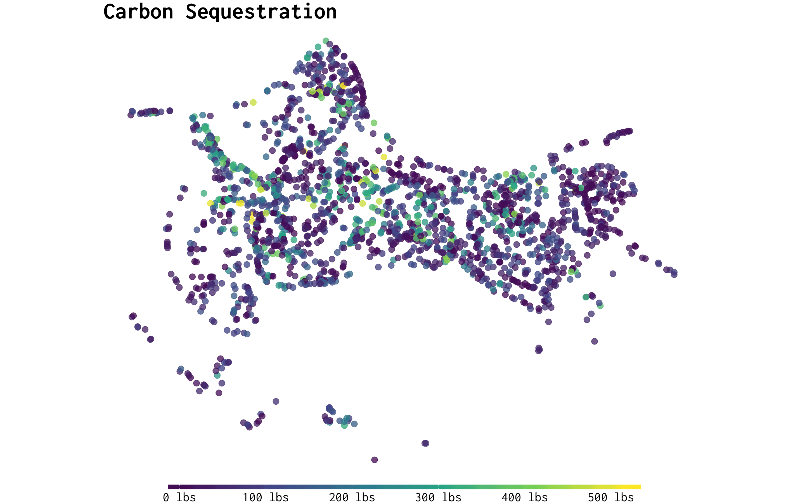

The goal of treeco is to provide R users a tool for calculating the eco benefits of trees. All data used to calculate benefits is ripped from OpenStreetMaps otm-ecoservice repository which was (probably) ripped from i-Tree’s Eco or Streets software. A single tree is represented by 15 rows and 9 columns as there are 15 benefits calculated for every tree. Since tree inventories can be rather large, treeco utilizes the data.table package for speed. All calculations are done on unique species/dbh pairs to avoid redundant computation.
Installation
treeco isn’t available on CRAN but you can install it directly from github using devtools:
A reproducible example
We can use the trees dataset to demonstrate how eco_guess and eco_run_all works:
library(dplyr)
library(treeco)
df_trees <- trees %>%
mutate(common_name = "Black cherry") %>%
select(common_name, Girth) %>%
mutate(botanical_name = eco_guess(common_name, "botanical"))
eco_run_all(
data = df_trees, # dataset or path to CSV
common_col = "common_name", # common name field
botanical_col = "botanical_name", # botanical name field
dbh_col = "Girth", # dbh field
region = "PiedmtCLT", # region code
n = 0.99, # optional, threshold for species guessing
print_time = TRUE # optional, print elapsed time
) %>% as_tibble()
#> # A tibble: 465 x 9
#> id botanical common dbh benefit_value benefit unit dollars rn
#> <int> <chr> <chr> <dbl> <dbl> <chr> <chr> <dbl> <chr>
#> 1 1 Prunus se… Black… 8.3 0.0776 aq nox… lb 0.51 1
#> 2 1 Prunus se… Black… 8.3 0.026 aq nox… lb 0.17 1
#> 3 1 Prunus se… Black… 8.3 0.0556 aq ozo… lb 0.36 1
#> 4 1 Prunus se… Black… 8.3 0.015 aq pm1… lb 0.04 1
#> 5 1 Prunus se… Black… 8.3 0.0633 aq pm1… lb 0.16 1
#> 6 1 Prunus se… Black… 8.3 0.165 aq sox… lb 0.32 1
#> 7 1 Prunus se… Black… 8.3 0.0119 aq sox… lb 0.02 1
#> 8 1 Prunus se… Black… 8.3 0.0146 aq voc… lb 0.09 1
#> 9 1 Prunus se… Black… 8.3 -0.338 bvoc lb 2.12 1
#> 10 1 Prunus se… Black… 8.3 30.3 co2 av… lb 0.23 1
#> # ... with 455 more rowsMore examples
Use eco_run to calculate benefits for a single tree:
treeco::eco_run("Common fig", 20, "InlEmpCLM")
#> common_name dbh benefit_value benefit unit dollars
#> 1: Common fig 20 0.2429 aq nox avoided lb 0.93
#> 2: Common fig 20 0.2623 aq nox dep lb 1.01
#> 3: Common fig 20 0.7716 aq ozone dep lb 2.96
#> 4: Common fig 20 0.0602 aq pm10 avoided lb 0.28
#> 5: Common fig 20 0.4079 aq pm10 dep lb 1.89
#> 6: Common fig 20 0.4813 aq sox avoided lb 1.17
#> 7: Common fig 20 0.0353 aq sox dep lb 0.09
#> 8: Common fig 20 0.0602 aq voc avoided lb 0.12
#> 9: Common fig 20 0.0000 bvoc lb 0.00
#> 10: Common fig 20 122.7973 co2 avoided lb 0.41
#> 11: Common fig 20 9.0389 co2 sequestered lb 0.03
#> 12: Common fig 20 1255.7516 co2 storage lb 4.19
#> 13: Common fig 20 189.2000 electricity kwh 38.12
#> 14: Common fig 20 834.7837 hydro interception gal 4.59
#> 15: Common fig 20 -179.4561 natural gas lb 1.20One issue with eco benefits is that they all rely on i-Tree’s master_species_list which is a list of 3,000+ species, therefore a users data needs to fit this list in order to extract benefits. For example, “Fig tree” doesn’t match i-Tree’s “Common fig”. So far, there really isn’t a great solution to this. For now, treeco guesses the species code on the fly by quantifying the “similarity”, anything below 90% similar is immediately discarded.
For example, if we misspell “Common fig” as “Commn fig”:
treeco::eco_run("Commn fig", 20, "InlEmpCLM")
#> Species given: [commn fig]
#> Closest match: [common fig]
#> ...
#> Using closest match
#> common_name dbh benefit_value benefit unit dollars
#> 1: Common fig 20 0.2429 aq nox avoided lb 0.93
#> 2: Common fig 20 0.2623 aq nox dep lb 1.01
#> 3: Common fig 20 0.7716 aq ozone dep lb 2.96
#> 4: Common fig 20 0.0602 aq pm10 avoided lb 0.28
#> 5: Common fig 20 0.4079 aq pm10 dep lb 1.89
#> 6: Common fig 20 0.4813 aq sox avoided lb 1.17
#> 7: Common fig 20 0.0353 aq sox dep lb 0.09
#> 8: Common fig 20 0.0602 aq voc avoided lb 0.12
#> 9: Common fig 20 0.0000 bvoc lb 0.00
#> 10: Common fig 20 122.7973 co2 avoided lb 0.41
#> 11: Common fig 20 9.0389 co2 sequestered lb 0.03
#> 12: Common fig 20 1255.7516 co2 storage lb 4.19
#> 13: Common fig 20 189.2000 electricity kwh 38.12
#> 14: Common fig 20 834.7837 hydro interception gal 4.59
#> 15: Common fig 20 -179.4561 natural gas lb 1.20If you are missing a field, you can use eco_guess to try and find it: